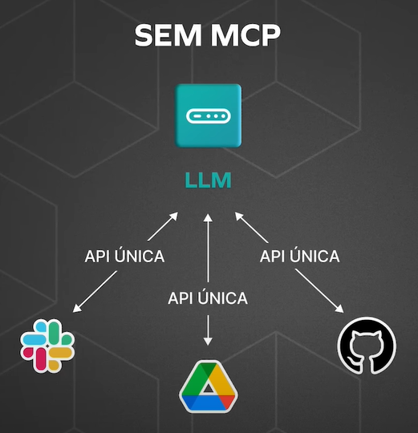
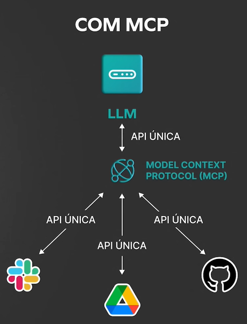
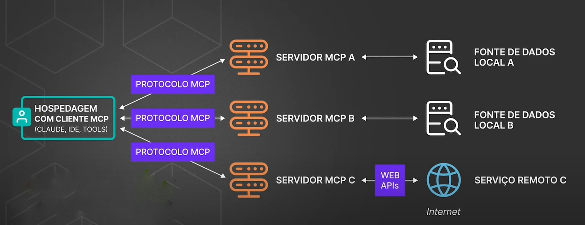
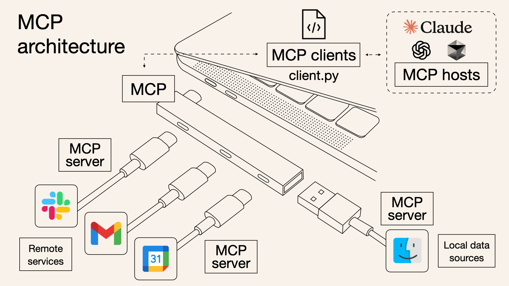

Material complementar:
Conceito:
Model Context Protocol (USB das IAs, plug universal) protocolo de conexão/integração entre agentes de IA LLMs e datasets, dispensando APIs despadronizadas. Fornece protocolo, padrões e segurança. Comunicação via json-rpc 2.0. Ao invés de programar conexão de modelo IA com cada fonte de dados, somente é necessário integrar ambas partes ao intermédio do servidor MCP específico.
Cenários:


Tipos de MCP:
- MCP Server: servidor que gerencia comunicação entre modelos de IA e dados;
- MCP Client: MCP Client: modelos LLMs de IA (ChatGPT, Claude, Copilot);
- MCP Registry: Ambientes "loja" de servidores MCP.
Componentes de servidor MCP:
- Tools: como extensões do servidor para IAs (ex: tool para buscar arquivos, tool para consultar API, tool para executar SQL);
- Resources: dados disponíveis ao modelo de IA, já prontos em cotexto, dispensando buscas (como uma apostila pra IA consultar sempre que precisar);
- Prompts: o que IA realmente vê, contexto final que chega no modelo, já montando com contexto do usuário, resources relevantes e tools disponíveis. Baseado nesse prompt, IA gerará resposta.
Fluxo:
Usuário pede à IA, que contata servidor, que busca dados e retorna à IA, e então ao usuário.
De forma simples, modelo LLM IA diz ao servidor MCP "Busca no BD e gere relatório", e servidor MCP realiza todas tarefas solicitadas no dataset alvo (BD).
- Usuário envia pergunta em prompt;
- Prompt "Qual o status dos pedidos de hoje?".
- Modelo LLM IA recebe prompt com contexto;
- Modelo LLM recebe prompt junto com informações de contexto (histórico de pedidos).
- Servidor MCP consulta Context Agent;
- MCP encaminha prompt para Context Agent, responsável por acessar dados específicos.
- Context Agent conecta com serviço real (local dos dados);
- Context Agent faz consulta SQL no banco de dados local de pedidos ou em sistema ERP.
- Resposta volta para modelo LLM IA;
- Context Agent retorna dados encontrados para modelo LLM IA.
- Modelo LLM IA gera resposta final, em linguagem natural, ao usuário.
- Resposta: "Hoje, 12 pedidos foram concluídos e 3 estão em processamento".


Arquitetura de fluxo de dados:
- MCP SSE (Server-Sent Events): baseado em HTTP para servidores MCP remotos;
- MCP STDIO (Standard Input/Output): baseado em fluxos entrada/saída do próprio SO, para integração local de componentes em mesmo sistema.
Exemplo prático:
Aqui